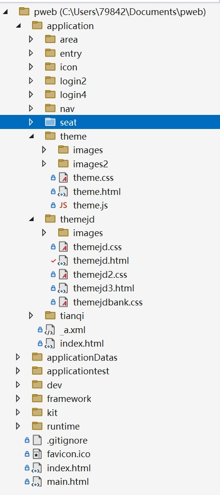
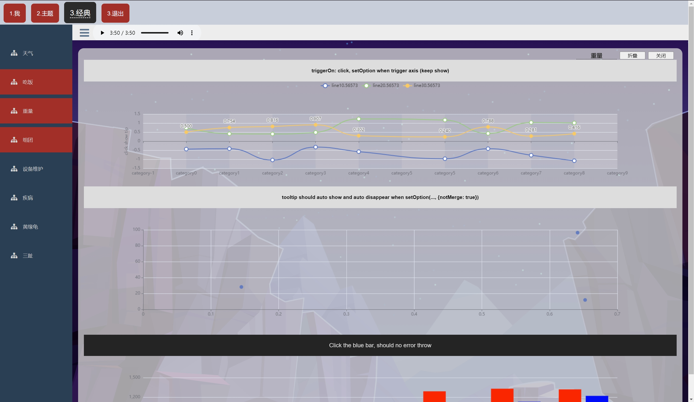
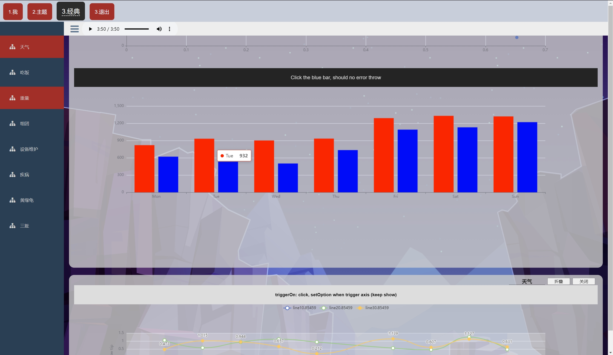
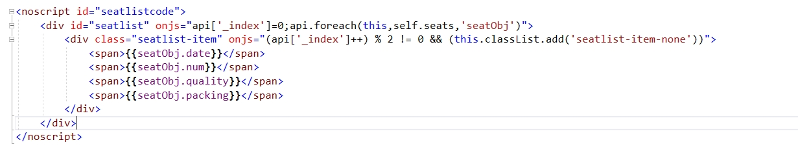
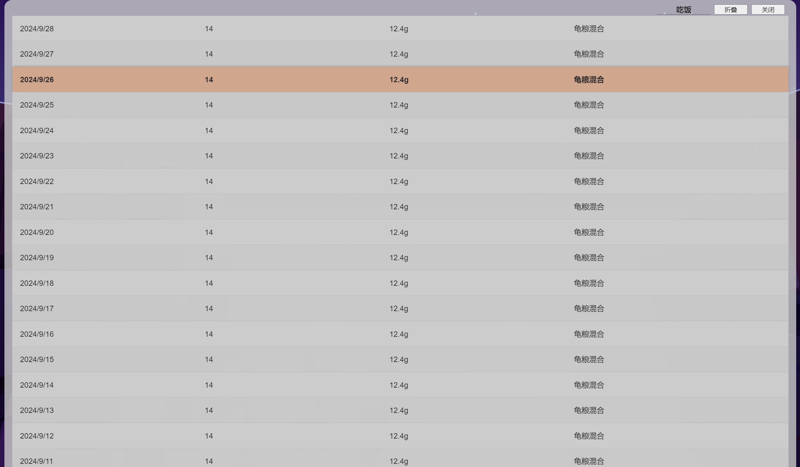
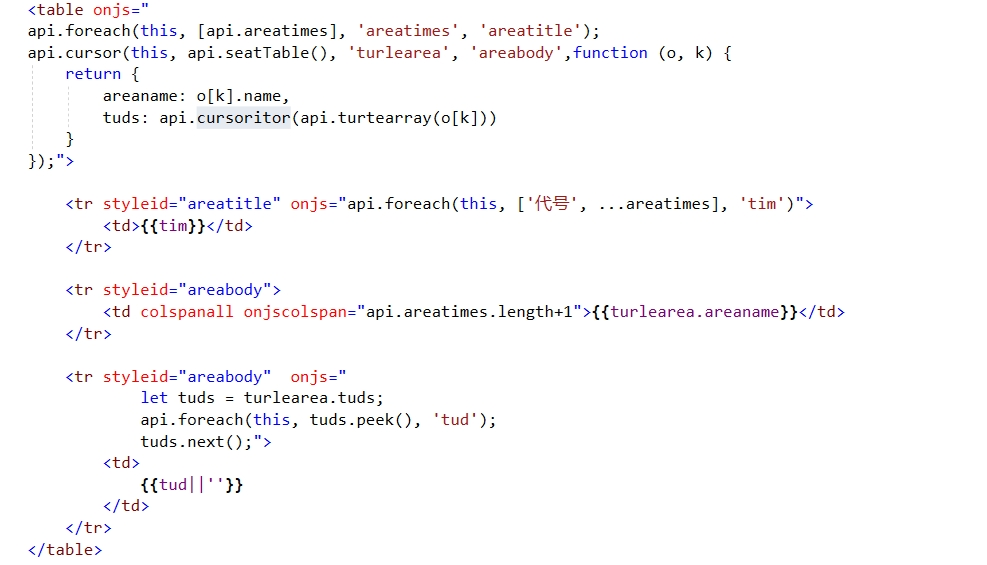
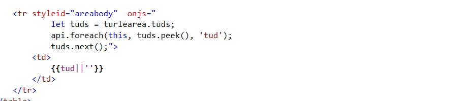
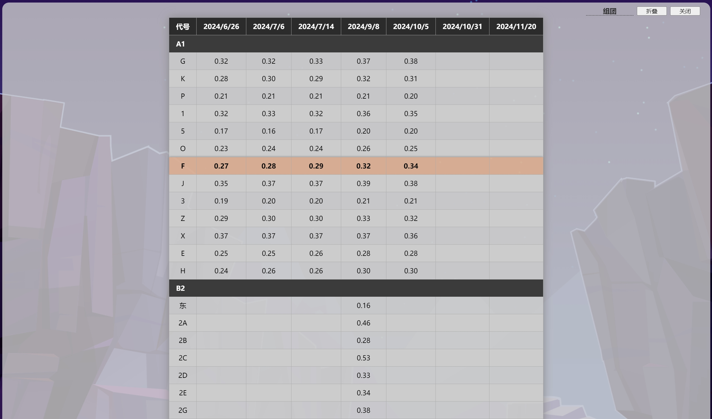

Aircraft api
1.Aircraft.loadingAppend()
ajax异步请求的方式获取另一个html的文件，以及关联的css，js等文件.
Aircraft.didAppend()
对传入进来的html/css/js等文件解释并且编译
Aircraft.didCodeNodes
执行编译，解释


2.Window相同字段不同page的取值区分
复用相同的代码源时，区分不同的page，不能共享相同的值。

3.api.foreach( element, code, paramName, styleid);
以数组的形式生成标签


4.api.cursor( element, obj, paramName, styleid, row-build-function);
以游标的形式，生成一组行构建数据构建标签。
api.cursoritor(obj)
以迭代器的方式构建标签。使用peek获得当前的数据，使用next进行下轮的标签生成。



5.page构建 next dev